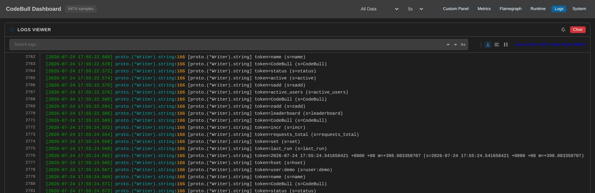
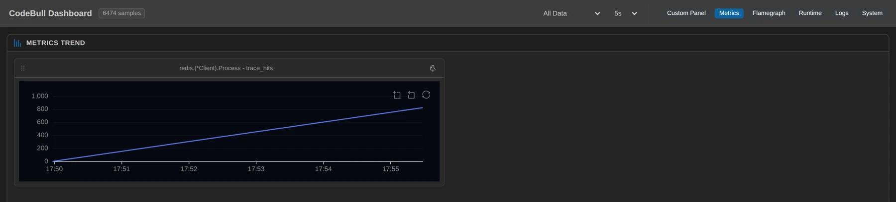

You think rdb.HSet(ctx, "user:demo", "name", "CodeBull", "status", "active") sends exactly that one line. But what actually climbs onto the TCP connection is a series of tokens, split apart and written out in order. This piece is about the same thing as before — stand in the right place, pull the values out, and what the client puts on the wire should have been visible all along.
First decide which layer to stand on
A Redis client is a layer of middleware: you call rdb.Incr(), and it goes through the public API → hook dispatch → retry loop → connection checkout → RESP encoding → socket write. What your command turns into, and how many layers it passes through, is normally invisible.
So the first decision, again, is: which layer. I picked two convergence points, one high and one low:
- Command layer (
redis.(*Client).Process) — every single-command call in go-redis (Incr,Set,HSet,SAdd,ZAdd…) eventually flows through here. I attached a pure counter to answer "how many commands were sent in total." - Wire layer (
proto.(*Writer).string) — before a command is written into the socket, every string argument (command name, key, field, value) passes through this function on its way out. Here I pulled that string out:token={s}.
Picking the second point took some care. I first tried standing a bit higher (the layer that takes interface{} arguments), and the dashboard only showed {type: 0x…, data: 0x…} — the interface header, not the value. Going lower, down to where each string actually gets written out, what I captured was the clean string itself: incr, user:demo, CodeBull — one at a time, as-is, readable. I'll come back to this choice with an honest caveat later.
Points attached, the service kept running one round every two seconds (five commands: INCR / SET / HSET / SADD / ZADD), and I started watching.
What the first five minutes showed: one line of Go = a series of ordered tokens on the wire
The observation window was about five and a half minutes (starting 09:49:58Z, 166 rounds). The command layer recorded 830 commands; the wire layer recorded 2,822 string tokens. Unfolded, one line of rdb.HSet(...) is really six tokens written out in order:
Every field and value you pass goes on the wire untouched, in the order you gave them. Here's the string composition of all five commands in a round (transcribed verbatim from the dashboard):
| # | The Go I wrote | Tokens captured on the dashboard (verbatim, in order) | Tokens |
|---|---|---|---|
| 1 | rdb.Incr(ctx, "requests_total") | incr · requests_total | 2 |
| 2 | rdb.Set(ctx, "last_run", t.String(), 0) | set · last_run · <time string> | 3 |
| 3 | rdb.HSet(ctx, "user:demo", ...) | hset · user:demo · name · CodeBull · status · active | 6 |
| 4 | rdb.SAdd(ctx, "active_users", "CodeBull") | sadd · active_users · CodeBull | 3 |
| 5 | rdb.ZAdd(ctx, "leaderboard", ...) | zadd · leaderboard · CodeBull | 3 |
Five commands per round — but not the same weight on the wire
String tokens each command expands into (17 per round)
IncrSetHSetSAddZAddFive Go calls that look equivalent differ threefold on the wire — a single HSet takes 6 of the round's 17 tokens. ZADD's count excludes the score: a float64 goes through the numeric encoder and never reaches the string exit (more on that below).
Every stable token appears 166 times (matching the round count), and together 17 × 166 = 2,822 — exactly the dashboard total, to the digit. That feeling of "the numbers add up on their own" is what makes observability trustworthy. Up to here it's "interesting but not surprising." What made me sit up straight was that <time string>.
And then I saw what SET was storing
The demo writes rdb.Set(ctx, "last_run", t.String(), 0). On the dashboard, that value token reads, verbatim:
2026-07-24 17:55:28.541657555 +0800 +08 m=+402.083349839Even Go's runtime monotonic clock reading, m=+402.08…, got stuffed into Redis.
What t.String() actually serializes into is something I never think about — it's just "storing a timestamp," right? But laid out verbatim on the dashboard, I could see that what I stored isn't a clean timestamp at all, but a whole string of Go's internal representation: wall clock + timezone + monotonic clock reading. Try to compare, sort, or parse that across machines later and all of it breaks (the monotonic reading only means anything inside this process).
This isn't a bug, and nothing errored — it's just something you thought you knew but had never actually looked at. That's the value of observability: it doesn't wait for an incident, it lets you see it the moment it gets stored.

proto.(*Writer).string, one row per string that actually went on the wire. Line 2776 is the finding — a time.Time written through SET, monotonic reading m=+398.083350707 and all. Open the live dashboard →An honest caveat: the dashboard doesn't pretend about type boundaries
Look at the ZADD row. What the dashboard captured is:
zadd · leaderboard · CodeBullOne thing is missing — the score. The score in redis.Z{Score: float64(val), ...} is a float64, and numbers take a different encoder inside the client (the path that turns them into ASCII bytes), which doesn't pass through my "string" observation point. So in this round I can see zadd, leaderboard, and CodeBull — and I simply cannot see that score value.
I could have moved the observation point lower and scooped up the numbers too — but then every line on the dashboard would drag a long byte array behind it and become hard to read. I chose clean, readable, strings-only, and I'll tell you honestly: there's a type boundary here — strings are visible, numbers go through another door. What's visible is visible; what isn't gets labeled as not visible, rather than handing you something that pretends to be complete — for observability that's arguably the most important quality of all.
One more number that lines up nicely: the string CodeBull appears three times per round (HSET value + SADD member + ZADD member), and the dashboard measured 498 = 3 × 166. The same string put on the wire three times across three data structures — the kind of "you actually sent it three times" fact you'd never notice without laying it out.
While we're here, let's reconcile
Command layer 830, wire layer 2,822 string tokens. Those two numbers side by side are a health check in themselves: 830 logical commands expanding into 2,822 string tokens, averaging 3.4 strings per command — exactly consistent with "five commands, 17 string tokens per round."
Two convergence points, two kinds of "volume"
Observation window 2026-07-24 09:49:58Z → 09:55:28Z (~5.5 minutes / 166 rounds)
Client.Process
Wire layer Writer.string
3.4 string tokens per logical command — exactly consistent with "five commands, 17 tokens per round."
The day that ratio skews (command count flat, token count exploding), someone has stuffed an unusual number of arguments into a command (a big batch, an oversized HSET field list). With both points running, you don't have to guess — the dashboard has already separated "the command" from "its weight on the wire."
Wrapping up
I didn't change a line of code, didn't enable the client's debug log, didn't capture tcpdump to decode RESP. I just picked two spots in a running process — the command convergence point and the string exit to the socket — pulled the values out, and watched for five and a half minutes.
What I got: I saw one HSet become six ordered tokens on the wire, saw myself store a whole time.Time with a monotonic clock reading into Redis, saw the same string sent three times per round, and knew exactly which type my observation point could not see.
A client is a black box, but a black box is only "invisible by default," not "impossible to see into." What it puts on the wire should have been visible all along.
Appendix: this round's setup (reproducible)
- Convergence points:
redis.(*Client).Process:706(metric, command count; variable filter keeps onlytrace_hitsso the dashboard stays clean)proto.(*Writer).string:166(log, capturingtoken={s}— the mandatory path for every string argument written into the socket, rendered as clean readable strings on the dashboard)
- Observed service: redis-demo running one round of 5 commands (INCR/SET/HSET/SADD/ZADD) every 2 seconds + Redis 7 (docker, port 6380) + vendored go-redis v9 (
redis_pkg/) - Observation window: 2026-07-24 09:49:58Z → 09:55:28Z (~5.5 minutes / 166 rounds); 830 commands, 2,822 string tokens; stable tokens 166 each,
CodeBull498 (3×/round), SET time string 166 (unique each round) - Type boundary: ZADD's float score goes through the numeric encoder (
w.int/w.float), not the string exit, so it is outside the string observation point's field of view this round — disclosed honestly, not fabricated - This round attached Metric + Log only, with no latency measurement (attaching latency to the client's per-call hot path breaks the observation bridge), so no millisecond figures appear anywhere in this piece

redis.(*Client).Process over the same five minutes — the command-level number that the 2,822 wire tokens above are reconciled against. Open the live dashboard →📊 Remote dashboard for this article (real measured data, viewable online): redis-observing-runtime-20260724
Every token and every count above can be reconciled verbatim on the Logs tab of that dashboard; the Metrics tab holds the hit counter for the command convergence point.
The "no code changes, attach observation points to a running process, then watch" part of this piece was done with CodeBull — a VS Code extension that dynamically injects Metric / Log / Latency observation points into running Go services: no source edits, no recompile, no restart. That SET storing a monotonic clock reading into Redis is exactly how I caught it live.
Every token and every number here comes from CodeBull's measurements against the running redis-demo service, and can be reconciled online via the dashboard link above.